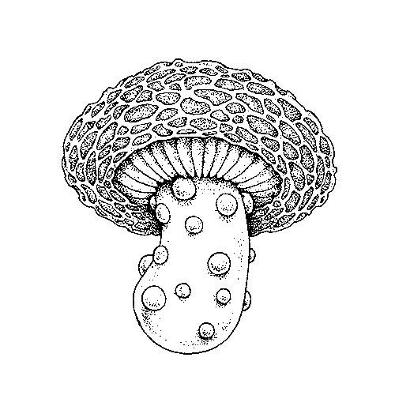
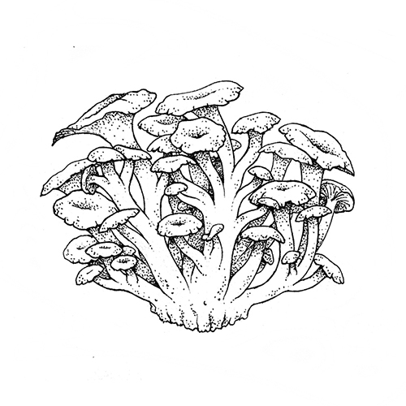
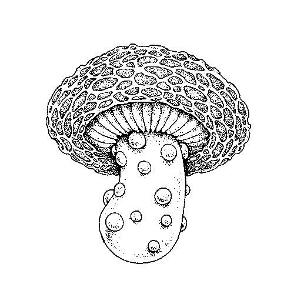
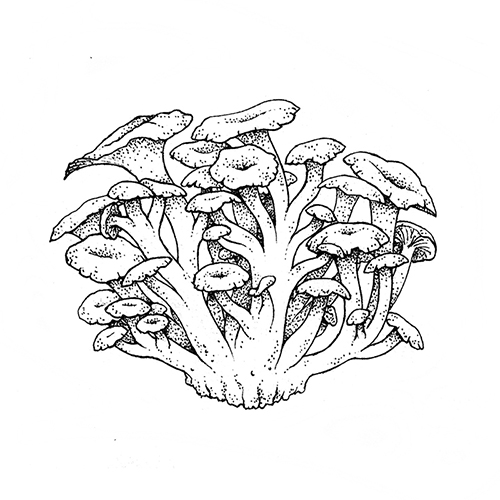

About
About Projects
Projects Books
Books Games
Games Stories
Stories Store
Store Collection
Collection Notes
Notes
Mushrooms come in a variety of shapes and sizes; attracted by their other-wordliness, I have started a fungi illustration series.
148x210mm (6x8inches) ink drawings on watercolour paper. All of the originals of this series found good homes. Ask for a commission.
 



Other illustrations
- Shiitake[147.6 KB]
- Ramaria Rubricarnata[205.8 KB]
- Psilocybe Mexicana[136.8 KB]
- Psilocybe Mexicana II[108.9 KB]
- Pleurotus Columbinus[178.6 KB]
- Morchella Rufobrunnea[149.6 KB]
- Coprinopsis Atramentaria[194.8 KB]
- Cantharellus Ciberius[175.6 KB]
- Buna Shimeji[167.3 KB]
- Amanita Muscaria[196.3 KB]
- Favolaschia Calocera[219.8 KB]
- Marasmius Haematocephalus[100.4 KB]
- Ophiocordyceps unilateralis[127.3 KB]